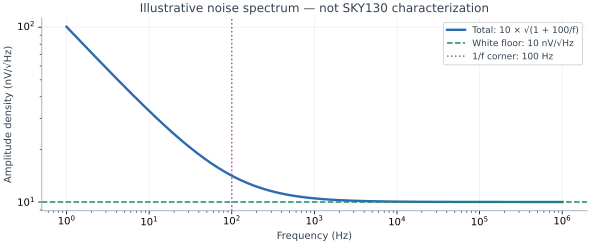

Noise, Mismatch & Variation
Why a stable simulation and a passing digital test can still hide analog error.
- Distinguish time-varying noise from device mismatch and global process shifts.
- Calculate a simple thermal-noise and capacitor-area budget.
- Explain what matching layout and Monte Carlo can establish.
1. “Noise” is not one failure mechanism
A digital designer may call any wrong voltage noise. An analog designer needs to separate fluctuations in time, fixed offsets, systematic coupling, and manufacturing variation. The distinction determines the remedy. Averaging may reduce uncorrelated temporal noise; it will not remove a fixed comparator offset, a reference gain error, or a synchronous switching spur.
| Effect | What changes? | Useful analysis |
|---|---|---|
| Thermal / flicker noise | The voltage or current over time | Noise spectrum integrated over the relevant transfer function |
| Local mismatch | Nominally identical devices on the same die differ | Validated mismatch Monte Carlo and matching layout |
| Global process variation | Many devices move together | Process corners or process Monte Carlo |
| Switching interference | Aggressor activity produces structured error | Coupled transient analysis and spectral measurements |
| Temperature drift | Operating conditions move a circuit's mean behavior | Temperature sweeps and compensation |
Noise can turn a comparator threshold into a probability distribution and a digital edge into timing jitter. Mismatch can give one current-mirror branch a persistent error. A typical-corner simulation can miss both.
2. A density is not yet an RMS voltage
For a resistor in thermal equilibrium, its open-circuit white voltage-noise density is en = √(4kTR) in V/√Hz. The one-sided power spectral density is Sv = 4kTR in V²/Hz. With transfer function H(f), vn,rms² = ∫ Sv(f)|H(f)|² df. The integral must use the actual bandwidth and gain. See ADI MT-047.
Worked example: at 300 K, a 10 kΩ resistor has 12.87 nV/√Hz. An ideal rectangular 10 kHz noise bandwidth gives 1.287 µV RMS. A unity-gain single-pole low-pass with 10 kHz −3 dB frequency instead has equivalent noise bandwidth πfc/2 = 15.71 kHz, giving 1.613 µV RMS. Treating −3 dB bandwidth as a rectangular integration limit understates that result.

Low-frequency limits matter for flicker noise. A claim of “total 1/f noise down to DC” has no finite answer in this ideal model. State the observation time, filtering, and integration band. Similarly, a noise number referred to an amplifier input and one referred to its output cannot be combined until both are referred to the same point.
vn,rms² = ∫ Sv(f)|H(f)|² df reduces to en √B for white noise and a rectangular band B. A one-pole filter’s equivalent noise bandwidth is (π/2) times its −3 dB frequency, which is why a careless “times √f3dB” is about 25% low. kT/C (next section) is the same integral, already closed, on an RC network.3. Sampling turns resistor noise into kT/C
A resistor connected to a capacitor forms a low-pass network. Integrating that resistor's thermal noise across the network gives vn,rms = √(kT/C). For a sufficiently settled sample/hold, opening the switch leaves a noisy sampled voltage. This is the filtered switch-resistance noise, so adding a second independent kT/C term for the same mechanism would double count it. A real switched-capacitor circuit may have several independent noise contributors and different noise gain. ADI's sampled-noise discussion gives the underlying model.
| Sampling C | √(kT/C) at 300 K | Note |
|---|---|---|
| 10 fF | 643.6 µV RMS | A small on-chip sample; noisy |
| 50 fF | 287.8 µV RMS | |
| 100 fF | 203.5 µV RMS | |
| 200 fF | 143.9 µV RMS | |
| 1 pF | 64.4 µV RMS | Less loading than the big caps; more noise than them |
| 10 pF | 20.4 µV RMS | 10× capacitance gives only √10 reduction |
| 100 pF | 6.44 µV RMS | More area, drive current, and acquisition time |
Values use k = 1.380649×10−23 J/K and T = 300 K. They are the closed integral of resistor thermal noise on C, not a measured SKY130 capacitor.
SKY130 connection: the public MiM device table gives nominal area capacitance of 2 fF/µm². Ignoring fringe and layout overhead, 1 pF therefore needs 500 µm² of plate area, roughly a 22.4 µm square. That is an area estimate, not a completed layout or a guaranteed capacitor value. Perimeter capacitance, bottom-plate parasitics, process variation, and the chosen device model still matter.
4. Mismatch is random across devices, not random every clock
The short-distance area term of the Pelgrom matching model is commonly written σ(ΔVT) = AVT/√(WL) for a matched pair. Here AVT is defined for the pair difference; a coefficient defined per device may require a √2 conversion. Long-range gradients and systematic layout effects need additional treatment.
From this PDK’s statistical model, not a teaching guess. The mismatch corner file sky130_fd_pr__nfet_01v8__mismatch.corner.spice sets sky130_fd_pr__nfet_01v8__vth0_slope = 3.356×10−3 (and a second parameter vth0_slope1 = 7.356×10−3 used in at least one geometry bin). The tt BSIM model applies it, when mc_mm_switch = 1, as
vth0 = vth0_nominal + MC_MM_SWITCH * AGAUSS(0, 1, 1)
* (vth0_slope / sqrt(L * W * mult))With .option scale=1u, L and W are in micrometres, so vth0_slope is a per-device AVT of 3.356 mV·µm. For two independent draws, the matched-pair sigma is √2 times larger:
σ(ΔVth) = √2 × 3.356 mV·µm / √(W·L) = 4.746 mV·µm / √(W·L)
Worked values, using the 3.356 mV·µm slope (not vth0_slope1): the HD inv_1 NMOS (W=0.65 µm, L=0.15 µm, W·L=0.0975 µm²) has a per-device σ of 10.75 mV and a pair σ of 15.20 mV. A 10 µm × 0.5 µm pair (W·L=5 µm²) has a pair σ of 2.12 mV. Quadrupling that area halves the area term, to 1.06 mV. A designer must still read the bin that applies to their W and L, because this PDK does not use a single slope at every geometry. This page quotes the model parameter; it does not report a Monte Carlo extraction of Vth from ngspice.
inv_1 NMOS (rightmost, 15.20 mV) and a 10×0.5 µm pair (2.12 mV). The line is the formula, not a fitted MC cloud. Bins that use vth0_slope1 would lie on a steeper line (7.356 × √2 = 10.40 mV·µm).Do not average one transistor's mismatch away by reading it 1,000 times. Repeated samples from that die retain the same offset. Calibration can estimate and correct some fixed errors, but its own range, quantization, drift, and observation noise belong in the error budget.
5. Corners, statistics, and layout answer different questions
FF/SS/SF/FS model sections exercise defined process combinations. They are not automatically probabilities and do not establish mismatch yield. Use the installed statistical model supported by the simulator, verify that random parameters actually change, retain seeds, and examine both process and local variation when required. Public model conversions have documented simulator compatibility issues; do not assume one generic “Monte Carlo on” command works for every SKY130 installation. The upstream model-conversion discussion is historical context, not a current setup recipe.
Across the boundary: an analog block can produce a perfectly stable but wrong voltage because of mismatch. Digital calibration can help if its trim range covers the distribution and the measurement has sufficient resolution. Meanwhile, digital switching can produce repeatable spurs that averaging does not suppress. Layout and firmware should be designed around the same measured error budget.
6. A small error budget
Suppose three independent, input-referred RMS noise sources contribute 80, 40, and 30 µV over the same band. Their combined noise is √(80²+40²+30²) = 94.3 µV RMS. A separate fixed 1 mV offset is not another temporal noise source. Track it as offset, or as a specified across-die distribution if that is the question. Correlated sources require covariance terms; worst-case deterministic limits usually combine differently.
Check your understanding: can four samples replace four times the capacitor area?
Four independent samples averaged together reduce their RMS temporal noise by two. Four times the capacitor area reduces ideal kT/C RMS noise by two for each sample. They can produce the same noise reduction under those assumptions, but they have different bandwidth, latency, settling, power, and correlation costs. Neither removes fixed mismatch by itself.
Check your understanding — what is the kT/C noise on a 1 pF sampling capacitor at 300 K?
√(kT/C) = √(1.38 × 10⁻²³ × 300 / 10⁻¹²) ≈ 64 µV RMS. A 4 pF capacitor halves it to about 32 µV, at four times the area and load.
Key takeaways
- Keep temporal noise, mismatch, process shifts, and interference distinct.
- Integrate noise power through the circuit transfer function; amplitude densities do not add directly.
- Bigger sampling capacitance reduces ideal kT/C noise but increases loading and area.
- Common-centroid placement targets gradients; random mismatch still depends on devices and area.
- Corner success, statistical yield, and calibration coverage are separate claims.
Sources & scope
Checked 6 November 2026. Diagrams and worked calculations are original teaching examples; assumed values are not characterized SKY130 performance.
- Analog Devices MT-047: Op Amp Noise — thermal noise, noise density, bandwidth, and combining uncorrelated terms.
- Analog Devices: Noise and distortion in data converters — filtered thermal noise and kT/C.
- Pelgrom, Duinmaijer and Welbers (1989) — original matching paper; none of its measured coefficients is asserted to describe SKY130.
- SKY130 device details — MiM nominal area/periphery specifications and modeled device context.
- SKY130 upstream statistical-model discussion — historical evidence that simulator/model conversion matters; no current command is inferred.
- PDK file
sky130_fd_pr__nfet_01v8__mismatch.corner.spice, included via the course model librarylabs/common/models/sky130_course.lib.spice:vth0_slope = 3.356×10−3,vth0_slope1 = 7.356×10−3. Pair sigmas on this page are that parameter applied to the Pelgrom formula, not a Monte Carlo extraction. kT/C values use k = 1.380649×10−23 J/K at 300 K.
All 84 lessons
- Part I · Foundations: the physical chip and its vocabulary
- 1. What Is a Chip? Board, Package & Die
- 2. The Silicon Wafer: From Crystal to Dies
- 3. How a Die Is Built: SKY130 Layers & Lithography
- 4. The MOSFET: SKY130’s Transistor
- 5. Anatomy of a Die: Core, Pad Ring & Seal Ring
- 6. Packages: Wire Bonds, Flip-Chip, QFN & WLCSP
- 7. The PCB and the Path to the Transistor
- 8. The Design Flow and Its Files: RTL to GDS
- 9. Signals Primer: DC, AC, RMS, Decibels & the FFT
- Part II · Transistors to logic gates
- 10. Logic Gates at the Transistor Level
- 11. Drive Strength & Transistor Sizing
- 12. More Gate Topologies
- Part III · Standard-cell layout
- 13. Site Rows & Standard Cell Placement
- 14. The Power Grid & Routing Grids
- 15. Metal Layers, Vias & the Stackup
- 16. Inside a Standard Cell's Layout
- 17. The Cell Template: Tracks, Sites & Edges
- 18. Anatomy of a Bigger Cell
- 19. Pin Access & Porosity
- 20. A Flip-Flop From the Inside
- Part IV · Loads, timing and interconnect
- 21. Loads
- 22. Liberty Files: What a Cell Library Records
- 23. Reading Liberty Timing Tables
- 24. Standard-Cell Characterization: How Liberty Is Made
- 25. Timing
- 26. Setup and Hold
- 27. Latch-Based Design & Time Borrowing
- 28. Routing Resistance and Parasitics
- 29. Delay from Physics: Transistor, Contact, Via, Wire & Gate
- 30. Electromigration
- 31. Reliability & Aging: HCI, BTI, TDDB & Self-Heating
- 32. DFM, Variation & Yield: A Digital View
- Part V · Digital implementation
- 33. RTL Patterns: FSMs, Handshakes, Resets & Lint
- 34. RTL, Synthesis & Timing Constraints
- 35. The Clock Tree
- 36. Clock Generation: Oscillators, DCO, PLL & Jitter
- 37. Clock Gating & Power States
- 38. Power Analysis & Low-Power Cells
- 39. Clock-Domain Crossings & Reset
- 40. Scan
- 41. DFT Beyond Scan: Faults, ATPG, BIST and JTAG
- 42. A Timed Logic Path: Registers, Clocks, Scan & Speed/Power
- 43. Memories: SRAM, OpenRAM and DFFRAM
- 44. Datapath & Arithmetic
- 45. Multi-Corner STA: OCV, CRPR & Hold Cells
- 46. Functional Verification: Testbenches, Assertions, Formal & Gate-Level Sim
- Part VI · Physical cells and the floorplan
- 47. Fill Cells
- 48. Well Taps and Latch-up
- 49. Endcaps
- 50. Tie Cells
- 51. Antenna Diodes
- 52. Decap Cells
- 53. Spare Cells and ECO
- 54. Level Shifters
- 55. Floorplan
- 56. Caravel Integration: The User Project Wrapper
- 57. Hierarchical Design, Abstracts & ECO
- 58. Placement: Global, Legalization & Detailed
- 59. Routing & Timing Closure
- 60. Digital Signal Integrity: Crosstalk Delay & Glitch
- 61. Metal Fill and Cell Fill
- 62. Physical Verification Signoff
- 63. Power-Integrity Signoff: Static IR, Dynamic IR & EM
- Part VII · The chip boundary: I/O, ESD and package
- 64. The I/O Ring
- 65. ESD and Clamps
- 66. I/O Fill
- 67. RDL Routing
- 68. I/O Power and IR Drop
- 69. Power, Package & Thermal Coupling
- 70. Tapeout, MPW & Tiny Tapeout
- 71. Post-Silicon Bring-Up, Test & Characterization
- Part VIII · Analog circuits
- 72. Analog Bias, gm & Headroom
- 73. Feedback, Loading & Stability
- 74. Differential Pairs, Common Mode & CMFB
- 75. Noise, Mismatch & Variation
- 76. References, Temperature & Startup
- 77. Comparators & Power Management: StrongARM, LDO & POR
- 78. Matching, Layout & Extracted Netlists
- Part IX · Mixed-signal: sampling, conversion and verification
- 79. Sampling, Aliasing & Settling
- 80. ADC & DAC Interfaces
- 81. FFT, Noise & Distortion Measurements
- 82. Calibration, Trimming & Testability
- 83. Crosstalk, Return Paths & Isolation
- 84. Mixed-Signal Verification & Bring-Up
Updated 11 November 2026 · 84 lessons · Offline lessons, diagrams, source code and recorded results · External references require internet access.